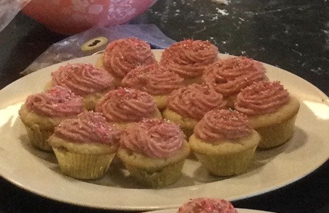

Daily baked favorites
Every pastry, bread, and sweet is made fresh each morning in our cozy kitchen.
Every pastry, bread, and sweet is made fresh each morning in our cozy kitchen.
From order-ahead cakes to party trays, we help make your celebrations sweeter.
Community-first flavors, friendly service, and an inviting atmosphere for every visit.
From lovely pies to fan favorite cakes, croissants to cookies, every item is crafted fresh daily. Whether you're looking for a simple pastry or a large party order, we've got you covered.
Open Daily
Monday - Friday: 7am - 6pm
Saturday: 8am - 5pm
Sunday: 9am - 3pm
📍 Seattle, WA
📞 audrey@audreysbakery.com

Order bakery favorites for pickup or delivery. We bake fresh every day so your order arrives deliciously ready to enjoy.
Time-honored recipes, a passion for baking, and a commitment to absolute awesomeness. We believe in quality over quantity, and it shows in every bite.